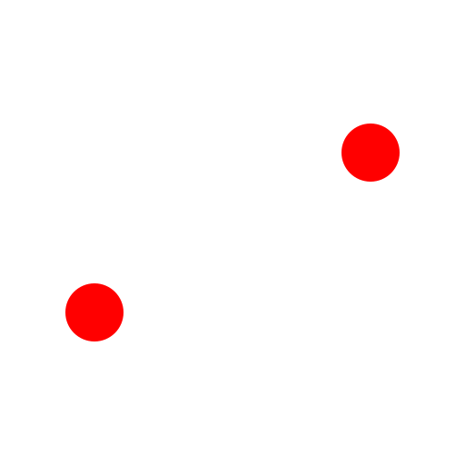
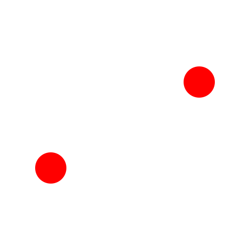
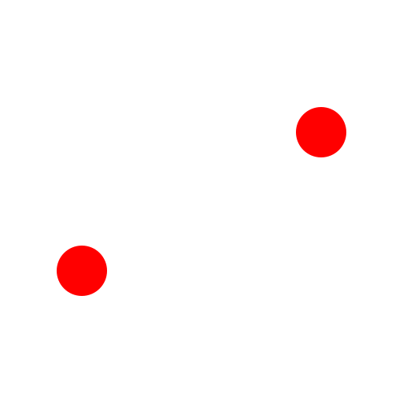
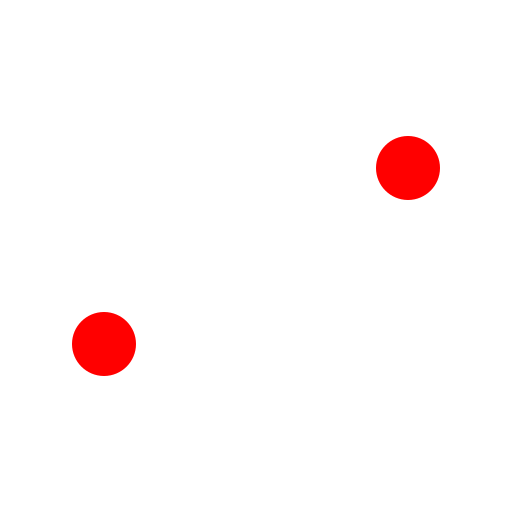
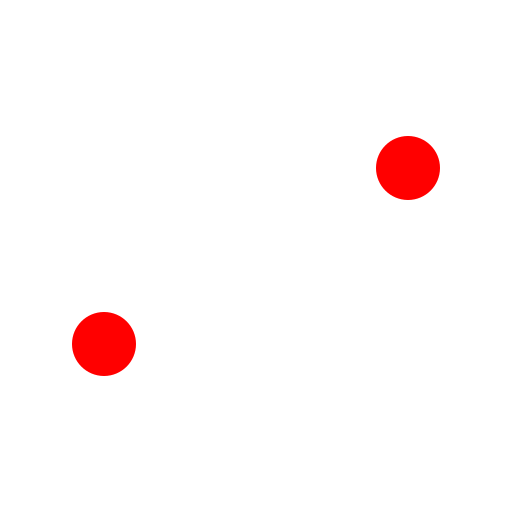

2 Puntos
Barra de herramienta / icono:

Menú:
Dibujar - Círculo - 2 Puntos
Acceso directo:
C, 2
Comandos:
circle2p | c2
Descripción:
Dibuja círculos a partir de dos puntos, diametralmente opuestos, dados.
Procedimiento:
Establezca el primer punto con el ratón o o introduzca una coordenada en la línea de comandos.
Establezca el segundo punto.
 


